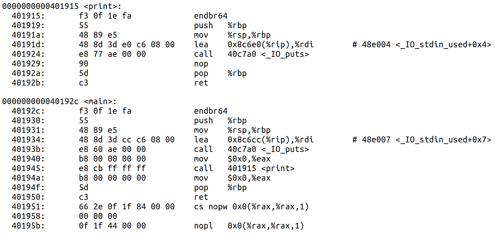
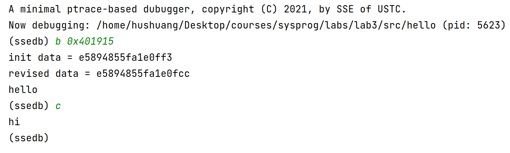
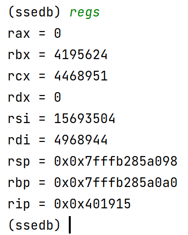
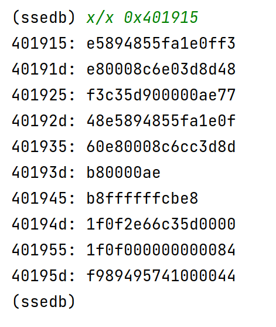
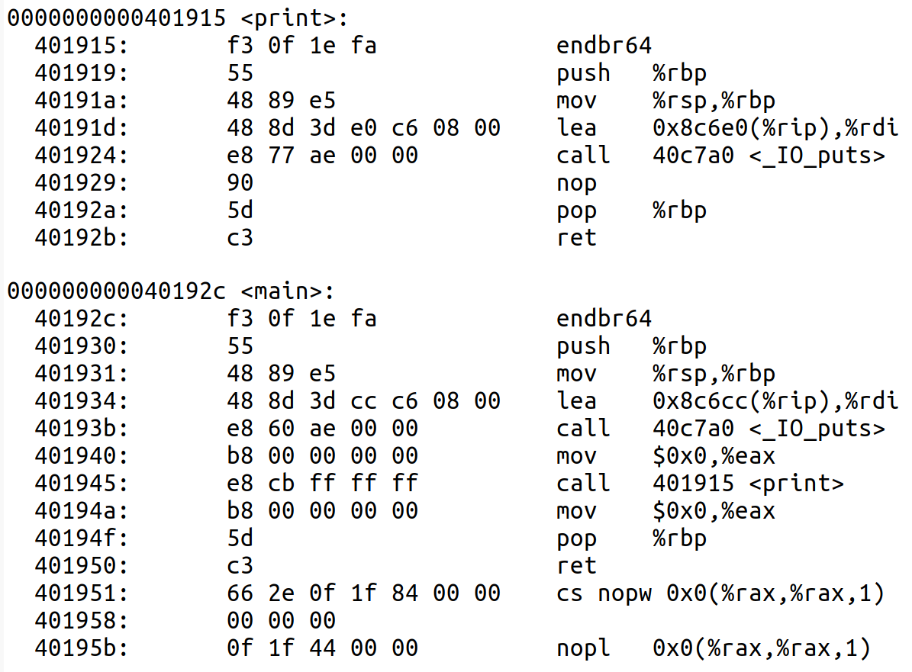
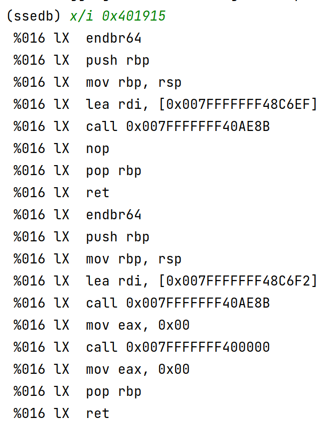

Programs normally contain bugs, even after extensive code reviewing or thorough testing. Debuggers are powerful and valuable tools to help developers catch bugs by executing the target program in a controlled way: setting up break points, peeking or modifying memory or register states, and recording execution traces, among others. Debuggers are indispensable tools for every serious developer.
In this lab, you will gain a deep understanding of program debugging by implementing a minimal debugger ssedb similar to the widely-used gdb debugger.
When you finished the lab, zip you code files with file name ID-lab-6.zip (e.g., SA19225789-lab-6.zip), and submit it to Online Teaching Platform. The deadline TBA (Beijing time). Any late submission will NOT be accepted.
In this section, let us start by investigating what is a debugger. Debuggers are powerful tools which allow programmers to load and run executables, to attach to an already running process (even remote ones); and perform interesting actions.
In this assignment, you'll learn what's going on under the hood of debugging, by implementing a minimal debugger called ssedb by yourself. And further, you'll understand how anti-debugging techniques can make debugging difficult, and how to overwhele these anti-debugging techniques.
Though small, ssedb debugger includes many features: loading files, setting up break points, stopping and continuing processes, peeking registers and memory, poking memory and registers, etc.. And finally, ssedb is also based-on ptrace, as do gdb, edb or ida pro, etc..
After completing this assignment, our ssedb debugger can achieve the following functions:
(ssedb) b 0xaddr
A break point makes your program stop whenever a certain point in the program is reached. You can set break points with the break command and its variants , to specify the place where your program should stop by exact address in the program.
For example, for this testing program:
#include<stdio.h>
void print(){
printf("hi\n");
}
int main(){
printf("hello\n");
print();
return 0;
}
Compile the testing program file:
css-lab@tiger:~$ gcc -static -o hello hello.c
And then run the debugger on hello. If you want to set a break point at the function print, run this:
css-lab@tiger:~$ objdump -d hello > content.txt
and figure out the address of the function print, suppose that address is 0xaddr on your machine. Now in the ssedb, you set up a break point on address 0xaddr by typing (remember this address must be in hexadecimal, which has a leading 0x):
(ssedb) b 0xaddr
Find the location of the function print in the file content.txt:
The result of the operation is shown in the figure below:
We can see from the running results that after setting the break point, the program stops when it reaches the print function. Then, execute the command c to let the program continue, and then the program continues to execute.
regs
This command can get the current register status of the process. The execution result of the command is shown in the figure below:

x/x 0xaddr
The function of the command x/x 0xaddr is to display the contents of the executable file in hexadecimal. The execution result of the command is shown in the figure below:
 
x/i 0xaddr
The function of this command is to disassemble the executable file and output the assembly code. The execution result of the command is shown in the figure below:
There are several other commands implemented in the source code we provide, you need to read the code and understand the implementation principle.
Have you ever wondered how a program like the GNU debugger helps you peek into the working of another program? Have you thought of the magic which goes into a fascinating environment like UML (User Mode Linux)? It's the magic of `ptrace', one of the most interesting system calls available on GNU/Linux. The objective of this article is to present the systems programmer with sufficient information on the working of `ptrace' using which she can do cool projects like the design of a simple debugger on her own.
When a process needs to invoke a kernel service, it invokes a system call, one of the calls in the operating system’s interface. The system call enters the kernel; the kernel performs the service and returns. Thus, a process alternates between executing in user space and kernel space.
The `ptrace' system call helps us temporarily stop a running process and read as well as modify the contents of registers and memory locations used by it. The traced program can be made to stop every time it tries to enter the kernel via a system call and every time it comes out of a syscall. We can also make the traced program stop itself after the execution of a single instruction. These features are enough to design debugging programs as well as sophisticated `virtualization' facilities like User Mode Linux.
Let's start with the code segment shown below:
#include <sys/ptrace.h>
main()
{
ptrace(PTRACE_TRACEME, 0, 0, 0);
while(1);
}
Try pressing `Ctrl-C' while the program is running. You will note that instead of getting terminated (which is the usual behaviour), the program gets `stopped'; executing `ps ax' shows that this is indeed the case.
The `ptrace' system call has the prototype:
long ptrace(enum __ptrace_request request, pid_t pid, void *addr, void *data);
The first argument is a `request'. Here, we are using the macro PTRACE_TRACEME by which our program is conveying its readiness to get `traced'. The remaining three arguments are simply ignored if the request is PTRACE_TRACEME. Once the program has announced that it is ready to be traced, any signal delivered to it (with the exception of SIGKILL) will result in the process getting stopped. Pressing `Ctrl-C' results in a SIGINT signal being delivered to the process..
Let's make things a bit more interesting.
/* `tracer' parent */
#include <sys/ptrace.h>
#include <signal.h>
#include <sys/types.h>
#include <sys/wait.h>
main()
{
int pid, status;
if((pid = fork()) == 0) {
execl("/home2/lfy/child1", "child1", 0);
printf("exec failed...\n");
} else {
sleep(1);
kill(pid, SIGINT);
wait(&status); // wait for child to stop
if(WIFSTOPPED(status))
printf("child has stopped...\n");
sleep(3);
ptrace(PTRACE_CONT, pid, 0, 0);
/* Will not come out of this wait because
* child does not terminate.
*/
wait(&status);
}
}
The code above shows a program which calls the `fork' system call and creates a copy of itself. The child process invokes `execl' and runs the program `child1' which has been compiled from:
/* compile this program to `child1' */
#include <sys/ptrace.h>
main()
{
ptrace(PTRACE_TRACEME, 0, 0, 0);
while(1) printf("hello\n");
}
The program being exec'd keeps printing `hello' in an infinite loop after expressing its willingness to be traced. Now, the parent process sleeps for 1 second and then sends the SIGINT signal to the child (using the `kill' system call). As a result, the child process stops and the parent comes out of `wait'; the WIFSTOPPED macro checks whether the variable `status' contains a bit pattern which indicates the fact that the child has stopped. The parent then goes to sleep for three more seconds; once it comes out of the sleep, it restarts the child by invoking `ptrace' with the request PTRACE_CONT.
The basic usage of `ptrace' can be summed up as follows:
Note that in this example, if the parent is to be able to trace the child, the child should have called `ptrace(PTRACE_TRACEME, ...)'. If we are planning to write a debugger, we should be able to trace arbitrary processes and not just those who have expressed their willingness to be traced.
#include <sys/ptrace.h>
#include <signal.h>
#include <sys/types.h>
#include <sys/wait.h>
main()
{
int pid, status;
if((pid = fork()) == 0) {
ptrace(PTRACE_TRACEME, 0, 0, 0);
execl("/home2/lfy/child2", "child2", 0);
printf("exec failed...\n");
} else {
wait(&status);
if(WIFSTOPPED(status))
printf("child has stopped...\n");
sleep(10);
ptrace(PTRACE_CONT, pid, 0, 0);
wait(&status);
}
}
The code above shows a parent process which forks a child - the child immediately invokes the PTRACE_TRACEME request before loading `child2' (compiled from code below).
//compile into `child2'
main()
{
/* Note that we are not calling ptrace(PTRACE_TRACEME,...)
* here. That will be done by the process which has
* exec'd this one.
*/
printf("child starts...\n");
sleep(1);
while(1) printf("hello\n");
}
The `ptrace' manual page says that an invocation of PTRACE_TRACEME will result in a signal SIGTRAP being delivered to the process every time an `exec' is called, even before the exec'd process gets a chance to run. As a result of getting this signal, the process stops. The parent then comes out of the wait, sleeps for ten seconds and restarts the exec'd process with an invocation of PTRACE_CONT.
#include <sys/ptrace.h>
#include <signal.h>
#include <linux/user.h>
#include <sys/types.h>
#include <sys/wait.h>
main()
{
int i = 0, status = 0, pid;
struct user_regs_struct uregs;
if ((pid=fork())==0) {
ptrace(PTRACE_TRACEME, 0, 0, 0);
execl("/home2/lfy/child3", "child3", 0);
printf("execl error...\n");
} else {
wait(&status);
ptrace(PTRACE_CONT, pid, 0, 0);
sleep(1);
//child should have got into the loop by
//this time!
kill(pid, SIGINT);
wait(&status);
ptrace(PTRACE_GETREGS, pid, 0, &uregs);
printf("rbx = %d\n", uregs.rbx);
uregs.rbx = 245;
ptrace(PTRACE_SETREGS, pid, 0, &uregs);
ptrace(PTRACE_CONT, pid, 0, 0);
wait(&status);
printf("parent: out of wait: %d...\n", WIFSTOPPED(status));
sleep(100);
}
}
The code above shows a parent which stops a child process, `child3', retrieves the values of all the CPU registers used by the child, alters the value of the `rbx' register and then let's the child continue its execution. The PTRACE_GETREGS request results in the values of the CPU registers used by the stopped child getting copied to a variable `uregs' of type `user_regs_struct'.
If you read the code below:
/* Compile this program into `child3' */
main()
{
printf("child3 starts...\n");
asm("pushl %rbx\n\t"
"movl $143, %rbx\n\t"
"L1: cmpl $245, %rbx\n\t"
"jne L1\n\t"
"popl %rbx\n\t");
printf("child3 outside loop...\n");
}
you will see that the `rbx' register has the value 143 and the child keeps on looping until it becomes equal to 245. The parent simply displays the value of the `rbx' register (stored in the field uregs.rbx) and changes it to 245 by invoking PTRACE_SETREGS. The child is then restarted; it comes out of the loop because `rbx' has become 245.
A tracing process can peek into the traced process's address space and extract the values of variables stored there. Say you wish to stop a process, examine the value of a variable `i' and change it to some other value. A fundamental problem is identifying the address of the variable. A trivial solution would be to make the process itself print it out or use an object file analysis tool like `nm'. A better way is to use the GNU BFD library.
/* Compile this program into `child4' */
int i = 143;
main()
{
printf("child4 starts...\n");
while(i != 245);
printf("child4 outside loop...\n");
}
The code above shows a program which keeps on looping till a global variable `i' becomes equal to 245. Here is part of the output I got when I compiled the code into `child4':
nm ./child4
00000000004ba0f0 D i 0000000000476fd0 t _i18n_number_rewrite 0000000000458a80 t _i18n_number_rewrite 000000000045e300 t _i18n_number_rewrite 000000000041ca50 i index 0000000000401000 T _init 000000000047c770 t init 00000000004b6930 d __init_array_end 00000000004b6928 d __init_array_start
We see that the variable `i' has been assigned the address 0x00000000004ba0f0. This address can be used by the code segment shown below to examine the value of `i' and alter it. The PTRACE_PEEKDATA parameter should be followed by the pid of the process being traced and the address of the location whose contents we wish to examine; in this case, it should be the address which `nm' has displayed. The PTRACE_POKEDATA request can be used to alter the contents of a memory location.
//segment of code which alters value of
//a variable in a child process. Identical
//to code which reads and changes register value.
//`addr' is address of variable being accessed.
data = ptrace(PTRACE_PEEKDATA, pid, addr, 0);
printf("data = %d\n", data);
data = 245;
ptrace(PTRACE_POKEDATA, pid, addr, data);
ptrace(PTRACE_CONT, pid, 0, 0);
wait(&status);
Debuggers help us `single-step' through our code, ie, execute one instruction, then stop and view value of some variable, execute one more instruction and so on. It's easy to do this using the PTRACE_SINGLESTEP request which restarts the stopped process, lets it execute a single instruction and then stops it once again.
//wait for child to stop at the `exec'
wait(&status);
while(1) {
// do just one instruction
ptrace(PTRACE_SINGLESTEP, pid, 0, 0);
wait(&status);
if(WIFEXITED(status)) break;
// `addr' is address of `i' in child process
dat = ptrace(PTRACE_PEEKDATA, pid, addr, 0);
if(dat == 10) {
ptrace(PTRACE_POKEDATA, pid, addr, 2341);
ptrace(PTRACE_CONT, pid, 0, 0);
break;
}
}
wait(&status);
if(WIFEXITED(status))printf("child over\n");
The code above shows a segment of a tracing process which keeps on calling PTRACE_SINGLESTEP until value of a variable (at location `addr') in the traced program is found to become equal to 10. At this stage, the tracing program changes the value to 2341 and lets the traced program run to completion by invoking PTRACE_CONT.
//compile into `child5'
int i;
main()
{
i = 10;
printf("child: i = %d\n", i);
}
The code above shows the program being traced.
The Linux implementation of `ptrace' has the ability to trace system calls. The PTRACE_SYSCALL request restarts the child process (just like PTRACE_CONT) but arranges for it to stop at the next entry to or exit from a system call. This opens up some interesting possibilities.
#include <sys/ptrace.h>
#include <signal.h>
#include <linux/user.h>
#include <sys/types.h>
#include <sys/wait.h>
main()
{
int status = 0, pid, r;
struct user_regs_struct uregs;
if ((pid=fork())==0) {
printf("pid = %d, ppid = %d\n", getpid(), getppid());
ptrace(PTRACE_TRACEME, 0, 0, 0);
kill(getpid(), SIGINT);
r = getpid();
printf("%d\n", r);
} else {
wait(&status);
ptrace(PTRACE_SYSCALL, pid, 0, 0);
wait(&status);
ptrace(PTRACE_GETREGS, pid, 0, &uregs);
//this should print 20, syscall number of getpid
printf("syscall nr: %d\n", uregs.orig_eax);
// 64 is syscall number of getppid
uregs.orig_eax = 64;
ptrace(PTRACE_SETREGS, pid, 0, &uregs);
ptrace(PTRACE_CONT, pid, 0, 0);
wait(&status);
if(WIFEXITED(status))printf("child over\n");
sleep(1000);
}
}
The code above shows a child process which first prints its own process id as well as its parent process id and then delivers a signal to itself. Because it is ready to be traced, this will result in the process getting stopped. The parent waits for this to happen and restarts the child by invoking PTRACE_SYSCALL. The next instruction in the child is an invocation of the `getpid' system call; the child gets stopped once again. Each system call has a unique `call number' - the operating system kernel uses this to identify the actual function to be executed. The parent process extracts this call number by invoking PTRACE_GETREGS (the `orig_eax' field of `ureg' holds the call number) and changes it to the call number of `getppid' by invoking PTRACE_SETREGS. The child is then restarted and allowed to run to completion by invoking PTRACE_CONT. Because the call number has been changed, the child will execute `getppid' instead of `getpid'!
This system call `redirection' has significance in the context of User Mode Linux (UML), which is a port of the Linux kernel to itself. UML allows you to run a modified version of the Linux kernel on top of the actual Linux kernel! You can run processes under the control of the modified kernel. When these processes execute system calls, they should execute code present in the modified kernel and not the original host kernel. This is achieved by using the PTRACE_SYSCALL facility offered by UML; interested readers should check out some of the papers available on the net which describe UML architecture.
The Linux implementation of `ptrace' has the ability to trace system calls. The PTRACE_SYSCALL request restarts the child process (just like PTRACE_CONT) but arranges for it to stop at the next entry to or exit from a system call. This opens up some interesting possibilities.
#include <sys/ptrace.h>
#include <signal.h>
#include <linux/user.h>
#include <sys/types.h>
#include <sys/wait.h>
main()
{
int status = 0, pid, r;
struct user_regs_struct uregs;
if ((pid=fork())==0) {
printf("pid = %d, ppid = %d\n", getpid(), getppid());
ptrace(PTRACE_TRACEME, 0, 0, 0);
kill(getpid(), SIGINT);
r = getpid();
printf("%d\n", r);
} else {
wait(&status);
ptrace(PTRACE_SYSCALL, pid, 0, 0);
wait(&status);
ptrace(PTRACE_GETREGS, pid, 0, &uregs);
//this should print 20, syscall number of getpid
printf("syscall nr: %d\n", uregs.orig_eax);
// 64 is syscall number of getppid
uregs.orig_eax = 64;
ptrace(PTRACE_SETREGS, pid, 0, &uregs);
ptrace(PTRACE_CONT, pid, 0, 0);
wait(&status);
if(WIFEXITED(status))printf("child over\n");
sleep(1000);
}
}
The code above shows a child process which first prints its own process id as well as its parent process id and then delivers a signal to itself. Because it is ready to be traced, this will result in the process getting stopped. The parent waits for this to happen and restarts the child by invoking PTRACE_SYSCALL. The next instruction in the child is an invocation of the `getpid' system call; the child gets stopped once again. Each system call has a unique `call number' - the operating system kernel uses this to identify the actual function to be executed. The parent process extracts this call number by invoking PTRACE_GETREGS (the `orig_rax' field of `ureg' holds the call number) and changes it to the call number of `getppid' by invoking PTRACE_SETREGS. The child is then restarted and allowed to run to completion by invoking PTRACE_CONT. Because the call number has been changed, the child will execute `getppid' instead of `getpid'!
This system call `redirection' has significance in the context of User Mode Linux (UML), which is a port of the Linux kernel to itself. UML allows you to run a modified version of the Linux kernel on top of the actual Linux kernel! You can run processes under the control of the modified kernel. When these processes execute system calls, they should execute code present in the modified kernel and not the original host kernel. This is achieved by using the PTRACE_SYSCALL facility offered by UML; interested readers should check out some of the papers available on the net which describe UML architecture.
The GNU BFD (Binary File Descriptor) library can be used to extract information from binary files. At the moment, we are only interested in scanning an object file and identifying the names and addresses of all the globally visible symbols.
// compile: cc filename.c -lbfd -liberty
// Type `info bfd' on your GNU/Linux system to
// read more about the BFD library.
#include <bfd.h>
#include <stdlib.h>
#include <assert.h>
#include <stdio.h>
//argv[1] should be name of an object file
main(int argc, char *argv[])
{
long storage_needed, num_symbols, i;
asymbol **symbol_table;
bfd *abfd;
char filename[100];
bfd_init(); // magic
abfd = bfd_openr(argv[1], NULL);
assert(abfd != NULL);
bfd_check_format(abfd, bfd_object);
storage_needed = bfd_get_symtab_upper_bound(abfd);
assert(storage_needed >= 0);
printf("storage = %d\n", storage_needed);
symbol_table = (asymbol**)malloc(storage_needed);
assert(symbol_table != 0);
num_symbols = bfd_canonicalize_symtab(abfd, symbol_table);
assert(num_symbols >= 0);
printf("num syms = %d\n", num_symbols);
for(i = 0; i < num_symbols; i++)
printf("%s: %x\n", bfd_asymbol_name(symbol_table[i]),
bfd_asymbol_value(symbol_table[i]));
}
The code above is a program which does exactly this. It can be easily altered to yield the addresses of only those symbols we are interested in.
Each element of the array `symbol_table' contains a pointer to an object of type `asymbol'. The macro's `bfd_asymbol_name' and `bfd_asymbol_value' are used to extract the name of the symbol as well as its address.
All the examples we had seen till now involved a parent process spawning a child and then tracing it. It is possible to use `ptrace' to trace an already running process which is not a proper child of the tracing program.
#include <sys/ptrace.h>
#include <signal.h>
#include <linux/user.h>
#include <sys/types.h>
#include <sys/wait.h>
main()
{
int status = 0, pid, addr;
struct user_regs_struct uregs;
scanf("%x%d", &addr, &pid);
ptrace(PTRACE_ATTACH, pid, 0, 0);
wait(&status);
ptrace(PTRACE_GETREGS, pid, 0, &uregs);
printf("eip: %x\n", uregs.eip);
uregs.eip = addr;
ptrace(PTRACE_SETREGS, pid, 0, &uregs);
ptrace(PTRACE_CONT, pid, 0, 0);
wait(&status);
if(WIFEXITED(status))printf("child over\n");
sleep(1000);
}
The code above shows a tracing program calling PTRACE_ATTACH on a running process whose pid has been read from the keyboard.
fun()
{
while(1) printf("hello\n");
}
main()
{
while(1);
}
shows the code of the process being traced. The tracing program has another input - the address of the function `fun' in the process being attached to. The effect of calling PTRACE_ATTACH is that the target becomes a `traced child' of the calling process; also, it appears as if the task being traced has called a PTRACE_TRACEME. A signal, SIGSTOP is delivered to it (as part of the PTRACE_ATTACH invocation) - the tracing program can now `wait' for the `child' to stop. Once the parent comes out of the wait, it examines the value of the instruction pointer in the child (the value stored in uregs.rip) and alters it to point to the function `fun'. The process is then restarted (note that there will be trouble if the function returns as we haven't stored a proper return address on the stack).
We have seen some of the facilities offered by `ptrace' which is of use to the systems programmer interested in writing programs like debuggers. The reader is expected to have an understanding of system calls like fork, exec, wait and the use of signals if she is to understand the ideas presented in this article. The book `Advanced Programming in the Unix Environment' by W.Richard Stevens is the best reference for everything concerning the Unix system call interface. Sandeep has written a series of articles for the Linux Gazette which explains `ptrace' in detail - the first part can be accessed at http://linuxgazette.net/issue81/sandeep.html. The second and third parts were published in issue81 and issue83 of the gazette. Pradeep Padala has authored a very informative article on `ptrace' which can be obtained from http://linuxjournal.com/article/6100. Benjamin Chelf has written an excellent article on the process of linking and the nature of executable files; you can read it at http://www.linux-mag.com/2002-03/compile_01.html.
First, download the source file of
ssedb
to your machine, along with a trivial testing program:
#include<stdio.h>
void print(){
printf("hi\n");
}
int main(){
printf("hello\n");
print();
return 0;
}
Compile the testing program files:
css-lab@tiger:~$ gcc -o hello.out hello.cAnd then run the debugger on hello.out:
css-lab@tiger:~$ objdump -d hello.outand figure out the address of the function print, suppose that address is 0xaddr on your machine. Now in the ssedb, you set up a break point on address 0xaddr by typing (remember this address must be in hexadecimal, which has a leading 0x):
(ssedb) b 0xaddrnow peek the registers:
(ssedb) regsWhat's the value of rip? Is this value right? Why? And then disassembly the content at address 0xaddr.
(ssedb) x/x 0xaddrWhat's there? Have you detected the bug? How to fix this bug?
(ssedb) x/i 0xaddryou'll see an error message indicating the file position you should supply code. Implement it. (Hint: manual disassemblying is tedious and error-prone, so you may find some libraries are helpful, such as the zydis.)
(ssedb) b maininstead of an ugly hexadecimal address for main. Implement this feature.
Happy hacking!